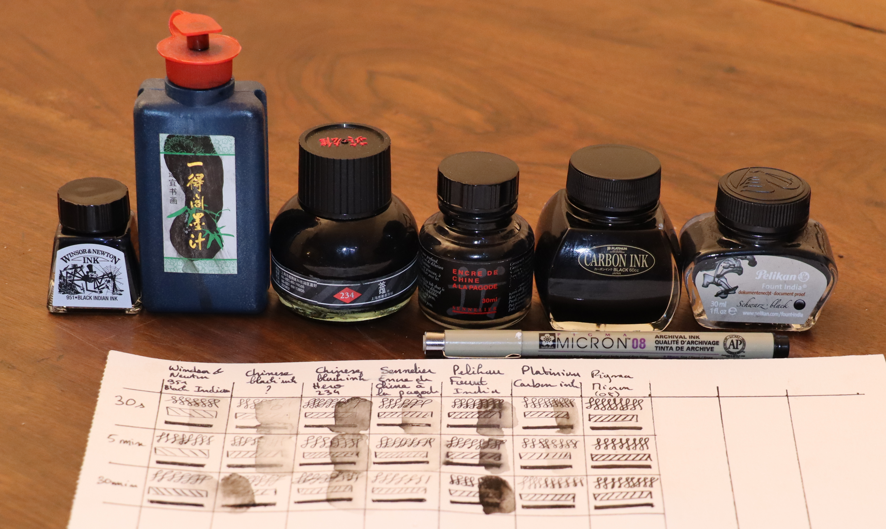

L'encre et l'aquarelle
Qu'est-ce qui rend une encre résistante à l'eau ?
L'encre noire est très couramment utilisée pour amener du contraste à la peinture aquarelle. Aujourd'hui, les encres peuvent être trouvées sous forme liquide dans des bouteilles. Historiquement toutefois, l'encre était conservée solide sous la forme d'un baton. Pour faire court, une encre est constituée d'un solvant dans lequel les pigments sont en suspension. Une fois que l'encre est déposée sur le papier, le solvant s'évapore pour ne laisser que les pigments. La force en charge de mantenir les pigments sur le papier est nommée en physique la force de "Van Der Waals". Cette liaison peut être plus ou moins forte; mouiller le papier peut la briser, et donc déplacer les pigments. L'encre n'est alors pas résistante à l'eau.

Dans le cas d'une entre résistante à l'eau, les additifs qui sont ajoutés par les fabriquants effectuent une réaction lorsque l'encre sèche. Cette réaction modifie la structure chimique de l'encre et donc renforce la force de "Van Der Walls". Il est important de noter qu'une encre n'est jamais 100% résistante à l'eau, certains solvants comme l'alcool peuvent casser les forces en jeu.
Critères à considérer
Ci-dessous sont présentés les critères à considérer lors du choix de l'encre :Evaluation des encres noire
La résistance à l'eau est essentielle pour la peinture à l'aquarelle, car celle-ci nécessite souvent d'humidifier voire de mouiller totalement le papier utilisé, et donc l'encre qui pourrait s'y trouver. Toutefois, une encre qui résiste à l'eau sacrifie souvent la fluidibilité de sa matière.Dans le cas d'un dessin simple, il est absolument nécessaire d'éviter de mélanger deux encres différentes. Une fois sèches, les encres risquent de paraitre totalement différentes et ruiner les efforts du travail réalisé. Lorsqu'une encre n'est pas utilisée, sa bouteille doit être conservée bouchée ain d'éviter une épaississement prématuré à cause de l'évaporation. Lorsqu'une bouteille d'encre atteint la fin de sa vie, c'est-à-dire qu'elle n'est plus assez protectrice, alors l'encre a une texture plus épaisse. C'est pourquoi il peut être intéressant de garder sous la main une bouteille neuve afin de garantir des lignes fines dans un dessin. Il est également possible de diluer l'encre épaissit avec un peu d'eau.
Trouver l'encre parfaite pour travailler avec de la peinture à l'aquarelle peut s'avérer un vrai défit. Depuis que j'ai commencé l'aquarelle, j'ai accumulé de nombreuses bouteilles d'encre. Dans la suite de cet article, je vais comparer ces différentes encres et vous donner mon opinion sur chacunes d'elles.
Pour cette comparaison, j'ai sélectionné ces encres :
Mon évaluation est composée de trois tests :

Voyons ce que donnent les résultats !
Winsor and Newton black indian ink (951)
Random ink bought in china
Hero 234
Sennelier indian ink "a la pagode"
Pelikan Fount india
Platinum Carbon ink
Conclusion
Il y a beaucoup d'encres noire sur le marché. Actuellement, ma favorite est la Platinum Carbon ink combinée avec le lamy 2000.Note : Noodler vend une encre nommée bullet-proof qui semble avoir bons avis. Cette encre mérite probablement un essai.